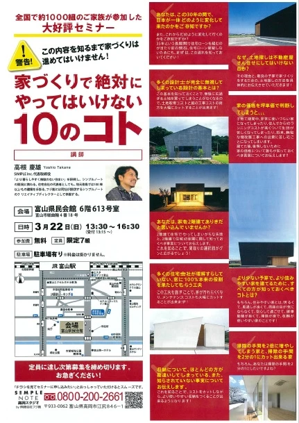
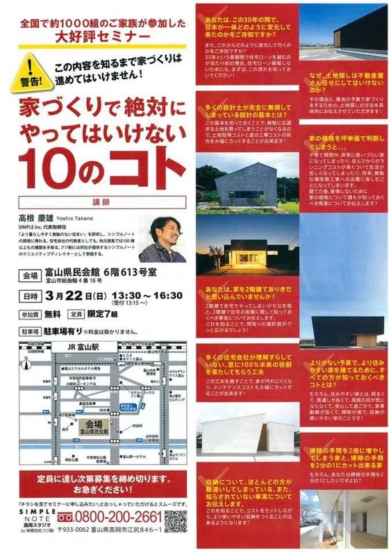

【富山県】フジ創の家づくり相談
▼ショールームで家づくり相談 フジ創アイノスでは予約制で無料相談会を実施しています。 可愛いショールームで家づくりのお悩み相談にお応えします。 資金計画のシュミレーションをはじめ、 将来を見据えた家づくり を提案致します
続きを読む →FUJISOU AINOS JOURNAL
家づくりのこと、暮らしのこと。
日々の想いを、お伝えします。
イベント 34件 ／ 新しい記事から 2・2ページ
▼ショールームで家づくり相談 フジ創アイノスでは予約制で無料相談会を実施しています。 可愛いショールームで家づくりのお悩み相談にお応えします。 資金計画のシュミレーションをはじめ、 将来を見据えた家づくり を提案致します
続きを読む →【フジ創のおうちを選ぶ理由】 ≪まごころのある家づくり≫ ・お客様のイメージをカタチにできる注文住宅 「キッチンの近くに家事スペースが欲しい」 「北欧風のバルコニーを付けたい」等 施主様の要望に柔軟な対応ができます。 建
続きを読む →
こんにちは、富山で自然素材にこだわるホンモノの家。フジ創アイノスです。 より多くの方に新しい家づくりの考えを培って頂きたいという想いから 前回参加者のセミナーに参加しての感想を紹介します。 よく考えて家を建てる重要性 将
続きを読む →
こんにちは、富山で自然素材にこだわるホンモノの家。フジ創アイノスです。 今月２２日に開催予定の 「家づくりで絶対にやってはいけない１０のコト」 より多くの方に新しい家づくりの考えを培って頂きたいという想いから 前回参加者
続きを読む →こんにちは、富山で自然素材にこだわるホンモノの家。フジ創アイノスです。 15-16は高岡市で『しっくい塗壁の心地よい家』完成見学会を開催しました。 「長持ちする家」「面倒な手入れのいらない家」を求めているご家族が来場者に
続きを読む →
こんにちは、富山で自然素材にこだわるホンモノの家。フジ創アイノスです。 明日明後日に迫った『しっくい塗壁の心地よい家』二日間限定の完成見学会があります。 シンプルで飽きのこない外観のお家です。 外壁材のガルバリウム鋼板は
続きを読む →
こんにちは、富山で自然素材にこだわるホンモノの家。フジ創アイノスです。 先日も見学会を開催し、参加者様には大変良い感触を頂きました(^^) 太陽光発電によるエコと北欧風のアンティークな内装、ガルバニウムを使った耐久性に富
続きを読む →
おはようございます。 富山で自然素材にこだわるホンモノの家。フジ創アイノスです。 本日『建国記念の日』祝日。フジ創アイノス営業しております。 この度の寒波で起きた「家の不都合」「冷暖房の物足りなさ」「断熱性への不安」..
続きを読む →
こんにちは、富山で自然素材にこだわるホンモノの家。フジ創アイノスです。 全国で１０００組の家族が参加した大人気セミナー 『家づくりで絶対にやってはいけない１０のコト』 を高岡市地場産業センターで開催しました。 最近巷では
続きを読む →
こんにちは、富山で自然素材にこだわるホンモノの家。フジ創アイノスです。 富山市で開催した【二棟同時完成見学会】 お越し頂いた皆様、シェアしてくださった皆様ありがとうございました。 フジ創アイノスでは、今後もご自身で体験し
続きを読む →